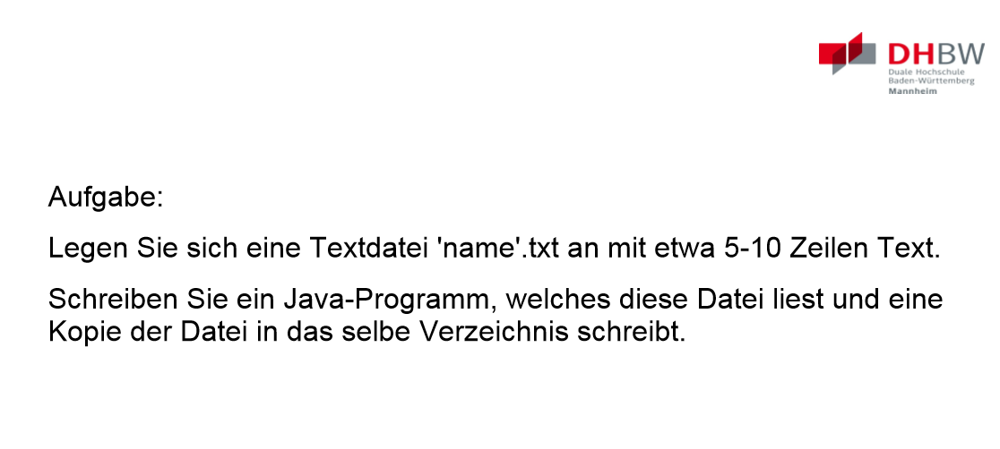

Vorlesung 1 - Einführung
 29.03.2021
29.03.2021
Wiederholung
Wie jede Vorlesung ging es auch dieses mal wieder mit einer kleinen Wiederholung los. Diesmal zum Thema Streams. Zus√§tzlich dazu hatten sich nur wenige die Aufgabe aus der letzten Vorlesung (eigentliche Hausaufgabe) angesehen und so wurde festgelegt, dass es daf√ºr sp√§ter noch einmal Zeit geben w√ºrde üôÑ.
Java.IO.File
Danach ging es aber los mit etwas Neuem - der Klasse Java.IO.File.
Diese repräsentiert dabei nicht den Inhalt der verwendetetn Dateien, sondern den Verweis auf die Datei im Dateisystem - also im Endeffekt den Pfad der Datei.
Diese File Objekte lassen sich nun genau so verwenden, wie dir String Dateipfade aus der letzten Vorlesung.
Puffer
Jetzt haben wir also Files, Streamreader/-writer und Objectreader/-writer. Wir holen uns eine Datei als File und können dann beliebige Objekte und andere Daten in diese
schreiben bzw. aus dieser lesen.
Was jetzt noch fehlte waren die Filereader/-writer. Diese lesen/schreiben Zeilenweise (je nachdem was man braucht) Strings, Integer, etc. . Wirklich viel Zeit haben wir
mit diesen jedoch nicht verbracht, da wir uns nahezu direkt mit den "Buffered-Versionen" der beiden Klassen beschäftigt haben. Diese Puffern ihre Ein-/Ausgaben. Auf die
Funktionsweise und die Vor-/Nachteile eines Puffers gehe ich an dieser Stelle nicht näher ein, da diese lediglich eine Wiederholung der Vorlesung Betriebssysteme aus dem vorletzten
Semester darstellen würden.
Daraufhin haben wir uns dann einem kleinen Quiz gewidmet, in welchem man feststellen sollte welche Code Beispiele korrekt sind und welche nicht.
Beispiel 3 haben wir in der Vorlesung als richtig angesehen. Persönlich finde ich das Beipiel allerdings nicht ganz optimal, da der Code wie er dort steht nicht funktionert, sondern nur unter der Annahme, dass es
- eine Variable file vom Typ File gibt und
- karteErzeugen() eine zuvor definierte Methode ist.
Praxis
Ansschließend ging es in den Praxis-Teil der Vorlesung. Der Teil, der bis jetzt nichts gemacht hat bekam Zeit die Übung der letzten Woche zu erledigen und es gab eine weitere Aufgabe.
Den Quellcode zu dieser Aufgabe kann man hier sehen:
import java.io.BufferedReader;
import java.io.BufferedWriter;
import java.io.FileReader;
import java.io.FileWriter;
import java.io.IOException;
public class texteLesen {
public static void main(String[] args){
try {
// Reader/Writer deklarieren
BufferedReader reader = new BufferedReader(new FileReader("name.txt"));
BufferedWriter writer = new BufferedWriter(new FileWriter("name_kopie.txt"));
// Variable zum Zwischenspeichern
String text;
//Schleife, die über die Textzeilen läuft
while((text = reader.readLine()) != null){
// Gelesene Zeilen direkt wieder schreiben
writer.write(text);
writer.newLine();
}
reader.close();
writer.close();
} catch (IOException e) {
e.printStackTrace();
}
}
}
Ausgeführt ergibt sich dieses Bild:
Der letzte Teil der Vorlesungen aka. Doku lesen
Nachdem nun die Aufgaben abgeschlossen waren kamen wir gegen Ende noch zu einem - wie Herr Noll es selbst ausdrückte - sehr langweiligen Teil, in welchem es um die verschiedenen Arten von Reader und Writern und die verschiedenen zur Verfügung stehenden Methoden ging.
Ich muss ehrlich sagen, dass ich den Sinn dahinter nicht ganz verstanden habe. Es ging nur um die Java spezifische Implementierung dieser Klassen. Das schaut man sich in der Praxis (zumindest nach meinem Dafürhalten) nur an wenn man es braucht bzw. wenn ich etwas ähnliches in C# versuchen würde, würde ich mir dann anschauen wie ich Dateien/Streams/etc. dort lese und schreibe.
Damit endete die heutige Vorlesung.